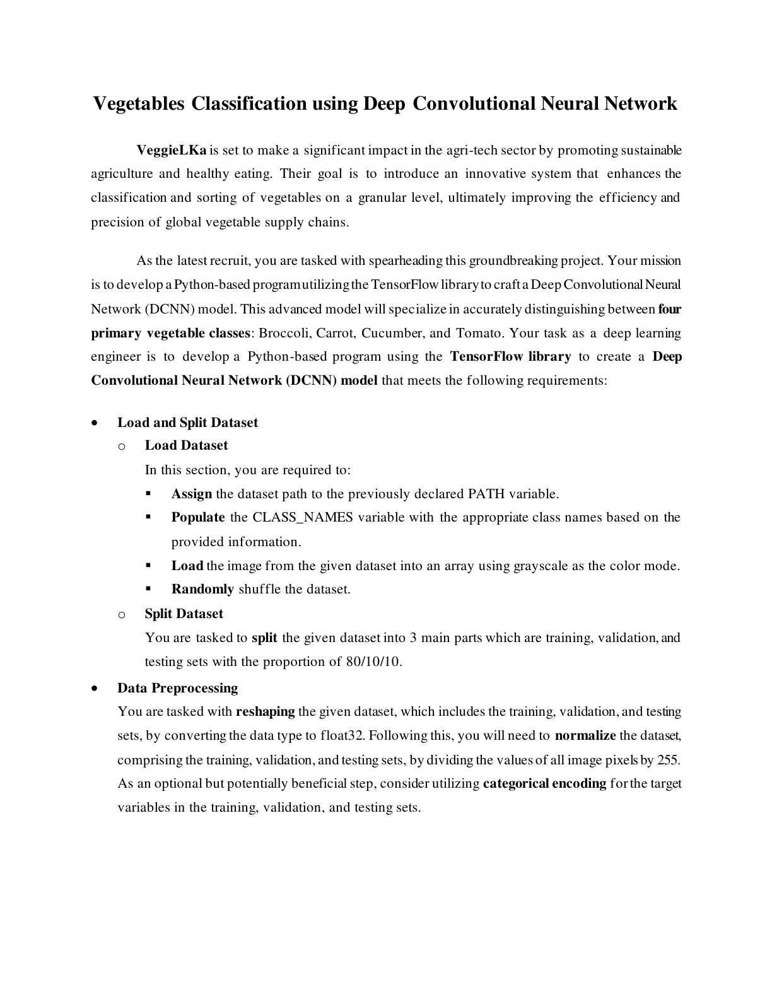
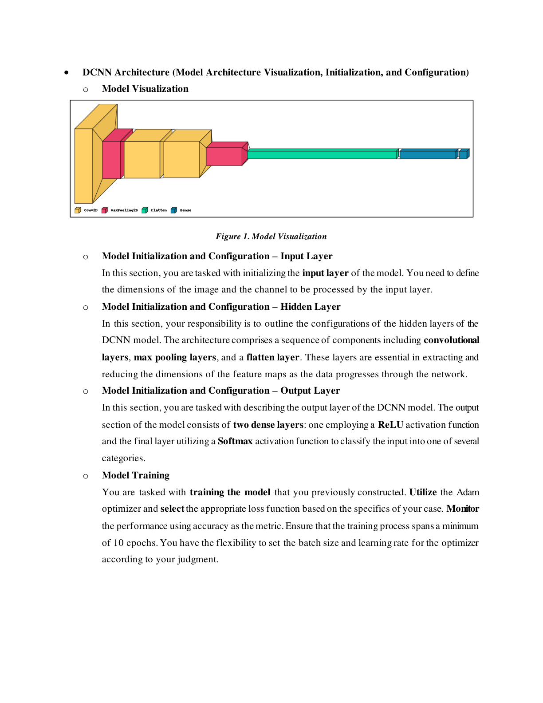
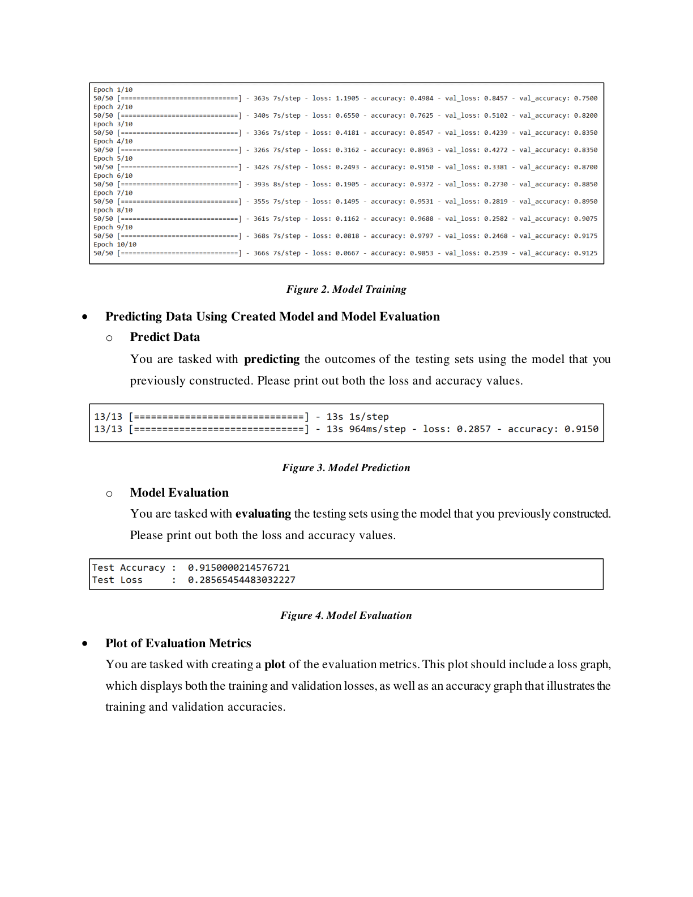
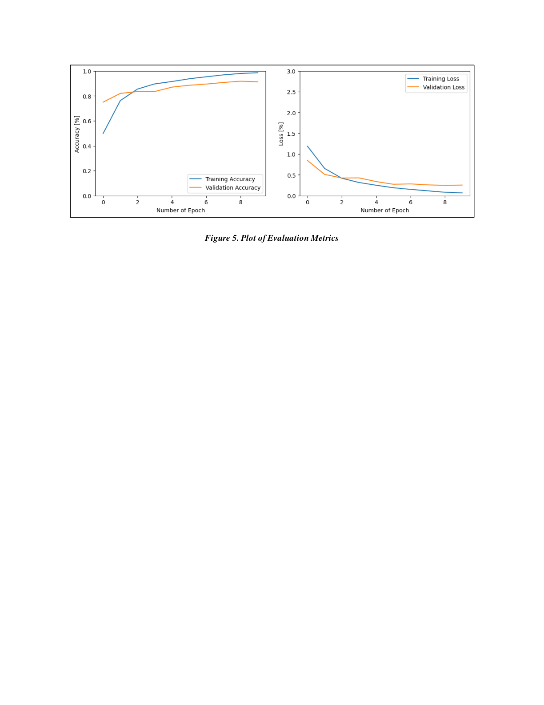

Imports
import os
import numpy as np
import matplotlib.pyplot as plt
import tensorflow as tf
from sklearn.model_selection import train_test_split
from tensorflow.keras.utils import load_img, img_to_array, to_categoricalVegetables Classification using a Deep Convolutional Neural Network (DCNN)




import os
import numpy as np
import matplotlib.pyplot as plt
import tensorflow as tf
from sklearn.model_selection import train_test_split
from tensorflow.keras.utils import load_img, img_to_array, to_categoricalDATA_PATH = "Dataset"
CLASS_LIST = ["Broccoli", "Carrot", "Cucumber", "Tomato"]
EPOCHS = 10
BATCH_SIZE = 32
images = []
labels = []for i, class_name in enumerate(CLASS_LIST):
# 0 Broccoli, 1 Carrot, 2 Cucumber, 3 Tomato
folder_path = os.path.join(DATA_PATH, class_name)
# NOTE: don't forget os.listdir (common mistake, causes an error if skipped)
for j, image_name in enumerate(os.listdir(folder_path)):
image_path = os.path.join(folder_path, image_name)
# param1 = image path, param2 = target size, param3 = color mode
image = load_img(image_path, target_size=(64, 64), color_mode="grayscale")
image = img_to_array(image)
image = image / 255.0 # normalize [0,255] -> [0,1]
images.append(image)
labels.append(i)
# only take 100 images per class, in case the device can't handle more
if j > 98:
breakx = np.array(images, dtype=np.float32)
y = to_categorical(labels, num_classes=len(CLASS_LIST))
# the brief says 80 | 10 | 10 — since train_test_split only splits in two,
# do it twice: first 80/20, then split that 20 in half again for 10/10
x_train, x_temp, y_train, y_temp = train_test_split(x, y, random_state=9, test_size=0.2)
x_test, x_val, y_test, y_val = train_test_split(x_temp, y_temp, random_state=10, train_size=0.5)model = tf.keras.Sequential([
# Conv2D params: filters, kernel size, stride, padding, input shape, activation
tf.keras.layers.Conv2D(16, kernel_size=(3,3), strides=(1,1), padding="same",
input_shape=(64, 64, 1), activation="relu"),
tf.keras.layers.MaxPooling2D((2,2)),
tf.keras.layers.Conv2D(32, kernel_size=(3,3), strides=(1,1), padding="same"),
tf.keras.layers.Conv2D(32, kernel_size=(3,3), strides=(1,1), padding="same"),
tf.keras.layers.MaxPooling2D((2,2)),
tf.keras.layers.Flatten(),
tf.keras.layers.Dense(32, activation="relu"),
tf.keras.layers.Dense(len(CLASS_LIST), activation="softmax")
])
model.compile(
optimizer="adam",
loss="categorical_crossentropy", # multi-class, so categorical_crossentropy
metrics=["accuracy"]
)history = model.fit(
x_train, y_train,
validation_data=(x_val, y_val),
epochs=EPOCHS,
batch_size=BATCH_SIZE
)
Epoch 1/10 — accuracy: 0.2656 — loss: 1.4107 — val_accuracy: 0.2250 — val_loss: 1.5491
Epoch 2/10 — accuracy: 0.3875 — loss: 1.3379 — val_accuracy: 0.6250 — val_loss: 1.2104
Epoch 3/10 — accuracy: 0.5844 — loss: 1.1494 — val_accuracy: 0.8000 — val_loss: 0.9145
Epoch 4/10 — accuracy: 0.6938 — loss: 0.9018 — val_accuracy: 0.7250 — val_loss: 0.7772
Epoch 5/10 — accuracy: 0.7312 — loss: 0.7116 — val_accuracy: 0.7250 — val_loss: 0.7780
Epoch 6/10 — accuracy: 0.7500 — loss: 0.6110 — val_accuracy: 0.7000 — val_loss: 0.6550
Epoch 7/10 — accuracy: 0.8406 — loss: 0.4224 — val_accuracy: 0.7250 — val_loss: 0.5456
Epoch 8/10 — accuracy: 0.8906 — loss: 0.3420 — val_accuracy: 0.7750 — val_loss: 0.6956
Epoch 9/10 — accuracy: 0.9094 — loss: 0.2749 — val_accuracy: 0.8000 — val_loss: 0.5970
Epoch 10/10 — accuracy: 0.9312 — loss: 0.2209 — val_accuracy: 0.7250 — val_loss: 0.5473model.evaluate(x_test, y_test)
# -> loss: 0.6861, accuracy: 0.7250prediction_result = model.predict(x_test)
for i, prediction in enumerate(prediction_result):
print(f"Actual : {CLASS_LIST[np.argmax(y_test[i])]} | Prediction : {CLASS_LIST[np.argmax(prediction)]}")| # | Actual | Prediction | Match |
|---|
# what the quiz actually asks you to show
plt.figure(figsize=(20, 4))
for i in range(10):
plt.subplot(1, 10, i+1)
plt.imshow(x_test[i], cmap="gray")
plt.text(-1, -1, f"Actual : {CLASS_LIST[np.argmax(y_test[i])]} | Prediction : {CLASS_LIST[np.argmax(prediction_result[i])]}")
plt.axis(False)
plt.show()
# alternate 2-row layout used for the TM1 quiz
plt.figure(figsize=(20, 8))
for i in range(5):
plt.subplot(2, 5, i+1)
plt.imshow(x_test[i], cmap="gray")
plt.text(-1, -1, f"Actual : {CLASS_LIST[np.argmax(y_test[i])]} | Prediction : {CLASS_LIST[np.argmax(prediction_result[i])]}")
plt.axis(False)
plt.subplot(2, 5, i+6)
plt.imshow(x_test[i+5], cmap="gray")
plt.text(-1, -1, f"Actual : {CLASS_LIST[np.argmax(y_test[i+5])]} | Prediction : {CLASS_LIST[np.argmax(prediction_result[i+5])]}")
plt.axis(False)
plt.show()Rendered plot images weren't saved in the exported notebook — this is exactly what generates them if you re-run the notebook.
plt.figure(figsize=(20,4))
plt.subplot(1, 2, 1)
plt.plot(history.history["accuracy"], label="Training Accuracy")
plt.plot(history.history["val_accuracy"], label="Validation Accuracy")
plt.legend(); plt.xlabel("Number of Epoch"); plt.ylabel("Accuracy")
plt.subplot(1, 2, 2)
plt.plot(history.history["loss"], label="Training Loss")
plt.plot(history.history["val_loss"], label="Validation Loss")
plt.legend(); plt.xlabel("Number of Epoch"); plt.ylabel("Loss")
plt.show()